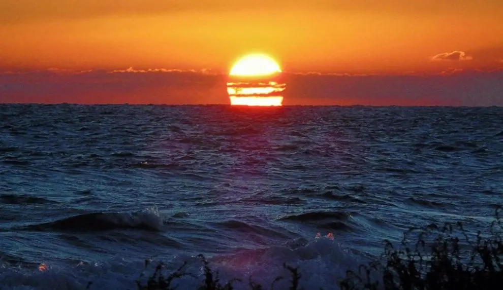
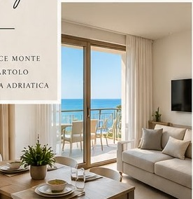
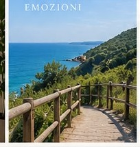
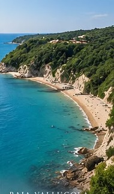
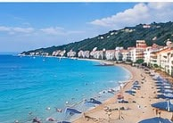
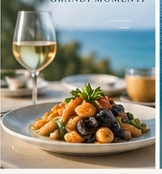
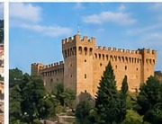
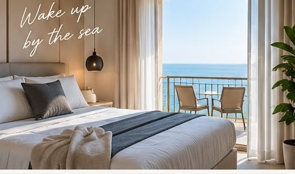
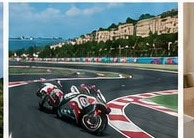
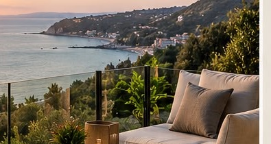

Una collezione di sole cinque residenze pensate per chi cerca molto più di una seconda casa.

Un luogo in cui tornare ogni estate, ogni weekend, ogni volta che ne senti il bisogno.
La casa dove lasciare le proprie cose. Dove invitare gli amici. Dove vedere crescere i propri figli. Dove creare ricordi che, anno dopo anno, diventano parte della storia della famiglia.
La tua seconda casa, con la sensazione di essere sempre a casa.
Possedere una casa a Gabicce Monte significa investire anche nella propria qualità della vita. Mare, natura, silenzio e privacy diventano qualcosa che puoi vivere quando vuoi.
Il vero lusso non è possedere di più.
È poter scegliere dove stare bene.
Gabicce Monte occupa una posizione particolare della Riviera: abbastanza vicina al mare per viverlo ogni giorno, abbastanza distante dal lungomare per ritrovare tranquillità e natura.







Cinque residenze contemporanee progettate per dialogare con il paesaggio di Gabicce Monte.

Una casa che puoi vivere, condividere, eventualmente mettere a reddito quando non la utilizzi e conservare all'interno del patrimonio familiare.
Le case si possono costruire.
Le posizioni no.
Il valore distintivo nasce dall'incontro tra territorio, limitata disponibilità, nuova costruzione e posizione.
L'acquirente può avere un unico interlocutore anche dopo l'acquisto.
Arrivi. Apri la porta.
Sei a casa.